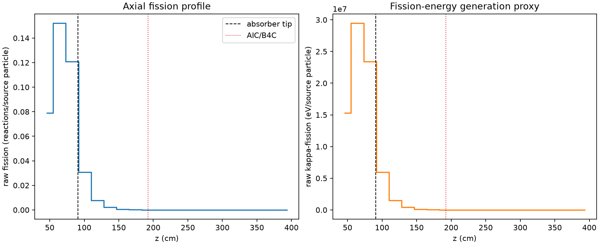
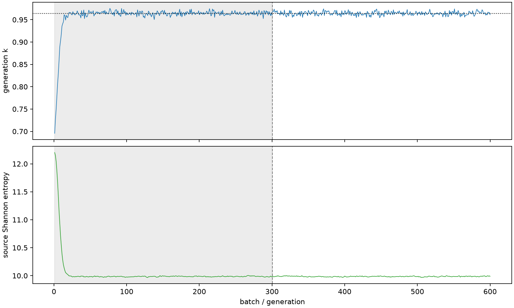

| field | value |
|---|---|
| experiment | V2-STAGE_128_OGRENCI_01-0004 |
| k | 0.9639239948037496 |
| MC standard error | 0.0001706189641048698 |
| seconds | 1016.921435768003 |
| acceptance | not_assessed |
| convergence | review_required |
Completed is output integrity only; physical and statistical review required. Zero tallies do not prove zero production or zero uncertainty.
| diagnostic | value |
|---|---|
| geometric fuel voxels | 5280 |
| zero fission tally voxels | 2150 |
| low signal fuel voxels | 3099 |
| low signal fission share | 9.33834967500975e-05 |
| low signal kappa share | 9.343565442328815e-05 |
| important fission share | 0.9501812632536543 |
| previous filter included | 2181 |
| duration estimate s | 1562.5173488400023 |
| actual minus estimate s | -545.5959130719993 |
| fission relative MC error | statistics |
|---|---|
| all_geometric_fuel | {"voxels": 5280, "positive_mean_voxels": 3130, "zero_mean_voxels": 2150, "undefined_relative_error_voxels": 2150, "median": 0.03347705256828588, "p95": 0.9535186323070547, "maximum": 1.0000000000000002} |
| low_signal | {"voxels": 3099, "positive_mean_voxels": 949, "zero_mean_voxels": 2150, "undefined_relative_error_voxels": 2150, "median": 0.5160710139463307, "p95": 1.0, "maximum": 1.0000000000000002} |
| important_95pct | {"voxels": 967, "positive_mean_voxels": 967, "zero_mean_voxels": 0, "undefined_relative_error_voxels": 0, "median": 0.0045465339653795005, "p95": 0.008161007035553568, "maximum": 0.009394662367740737} |
| outside_previous_filter | {"voxels": 3099, "positive_mean_voxels": 949, "zero_mean_voxels": 2150, "undefined_relative_error_voxels": 2150, "median": 0.5160710139463307, "p95": 1.0, "maximum": 1.0000000000000002} |
| kappa_fission relative MC error | statistics |
|---|---|
| all_geometric_fuel | {"voxels": 5280, "positive_mean_voxels": 3130, "zero_mean_voxels": 2150, "undefined_relative_error_voxels": 2150, "median": 0.03342713712413553, "p95": 0.9531394680490597, "maximum": 1.0000000000000002} |
| low_signal | {"voxels": 3099, "positive_mean_voxels": 949, "zero_mean_voxels": 2150, "undefined_relative_error_voxels": 2150, "median": 0.5160966805157654, "p95": 1.0, "maximum": 1.0000000000000002} |
| important_95pct | {"voxels": 967, "positive_mean_voxels": 967, "zero_mean_voxels": 0, "undefined_relative_error_voxels": 0, "median": 0.0045407850912724855, "p95": 0.008148174681353171, "maximum": 0.009380625708804179} |
| outside_previous_filter | {"voxels": 3099, "positive_mean_voxels": 949, "zero_mean_voxels": 2150, "undefined_relative_error_voxels": 2150, "median": 0.5160966805157654, "p95": 1.0, "maximum": 1.0000000000000002} |
| axial bin | fission share | kappa-fission share |
|---|---|---|
| 1 | 0.2008650874427685 | 0.20086361838401548 |
| 2 | 0.38695341176503195 | 0.3869301102498988 |
| 3 | 0.30717855625536294 | 0.307164597543255 |
| 4 | 0.077920087785613 | 0.07794795463407174 |
| 5 | 0.019880651000487703 | 0.019888535905755737 |
| 6 | 0.005303436107015943 | 0.005305588192370349 |
| 7 | 0.0014110851134747945 | 0.0014116771393391989 |
| 8 | 0.0003681806008665179 | 0.000368347339446087 |
| 9 | 9.329645701752488e-05 | 9.334194719746009e-05 |
| 10 | 2.165317509358695e-05 | 2.16688718709209e-05 |
| 11 | 3.831696724177286e-06 | 3.83669667683278e-06 |
| 12 | 6.749810626573603e-07 | 6.755474005667925e-07 |
| 13 | 4.7619480741498934e-08 | 4.754870164040172e-08 |
| 14 | 0.0 | 0.0 |
| 15 | 0.0 | 0.0 |
| 16 | 0.0 | 0.0 |
| 17 | 0.0 | 0.0 |
| 18 | 0.0 | 0.0 |
| 19 | 0.0 | 0.0 |
| 20 | 0.0 | 0.0 |
Histories include the inactive-to-active transition at batch 300. kappa-fission approximates fission energy production, not total heat deposition.

